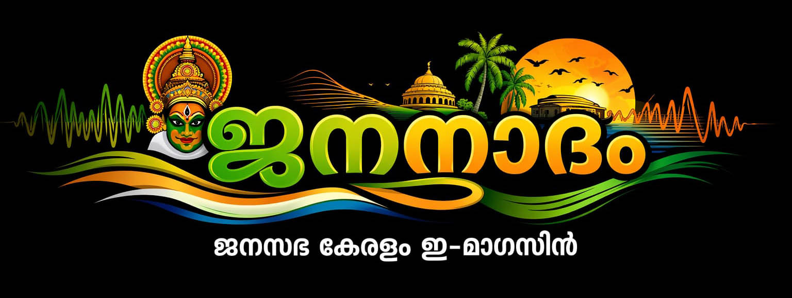

Team Janasabha

“India is my country, and all Indians are my brothers and sisters.” Janasabha is a social platform that strives to make this pledge
a reality in everyday life.
Based on the principles of Social Work and Community Development, Janasabha provides a platform that includes all individuals,
families, and organizations in a locality, helping to identify their strengths and potential, and to ensure development and well-being.
Yes, Janasabha recognizes that the soul of India resides in its local communities.
The aim of Janasabha is to heal the wounds of divisions and to actively promote the values upheld by the Indian Constitution—such as
fraternity, equality, unity, welfare, and development—within social life. This is also to inspire the younger/future generations
to come together and work for Mother India without prejudice.
Activities:
👉‘Snehasparsham’(Compassionate Outreach) charitable activities
👉Identifying and encouraging talents in various fields
👉Conducting National Integration Programmes
👉Organizing neighborhood Janasabhas including all residents
👉Joint celebration and community programs
👉Supporting ward representatives to strengthen Gram Sabhas/Ward Sabhas
👉Personality and leadership development programs
Janasabha Motto: Love, Unity, and Development
Are you interested in becoming a Janasabha volunteer or a community development worker by bringing together all the residents of
your locality without any divisions?
If yes,
👉 Become a Janasabha organizer
👉 Start Janasabha in your area
👉 Be part of your locality’s development
For more information and to join the district-level team, visit:
www.janasabha.org.in
👉 Share this message widely and become part of this initiative. Especially reach out to:
colleges, schools, social work departments, voluntary organizations, other social service institutions,
teachers, local leaders, cultural leaders, trainers, community social workers & interns, social media professionals and
other like minded social service professionals.